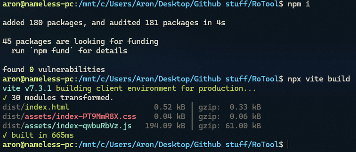
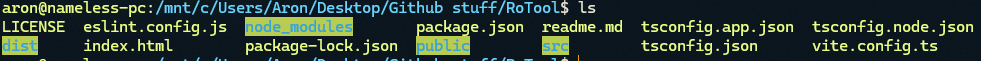

- Clone the repo
- Run npm i to install the packages
- Run npx vite build to build

If you did everything right then you should see theese folders

- Go to your manage extensions page (at chrome://extensions in Chromium based blowsers)
- Enable developer mode

- Press Load Unpacked fund your dist folder and select it

- You are done!